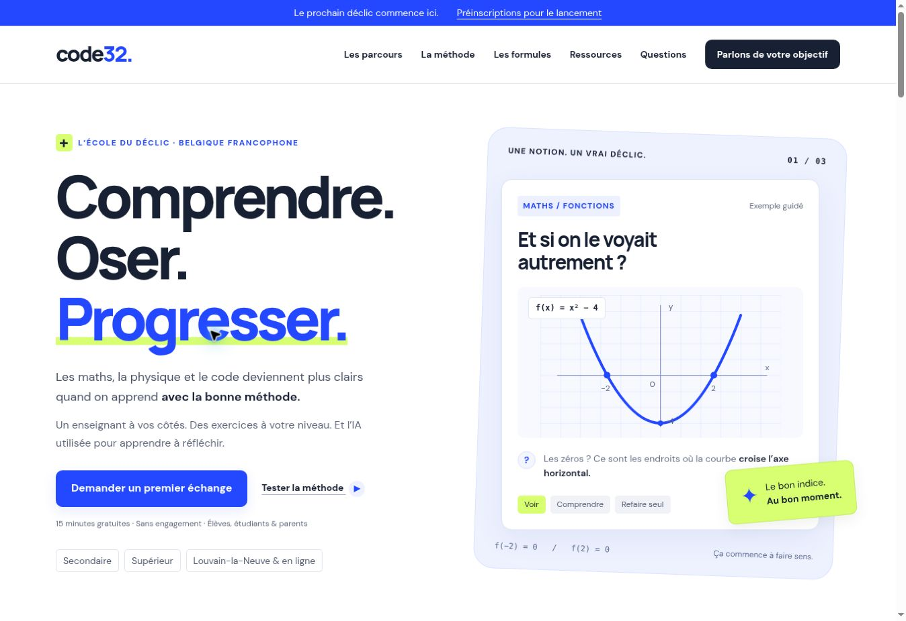

Your business is unique.
Your software should be too.
Custom software, websites worth exploring and intelligent systems. We connect people, tools and data to simplify the work that matters.
Let’s discuss your projectYour first hour is on us. A clear need. A sensible starting point.
Play with AI ↓From problem to system.
Application
An interface around the job: store, portal or workspace.
Select a component to understand its role.A contact in BelgiumFrom websites to business softwareA clear budget, step by step
Digital tools that fit
A concrete problem. A considered solution.
A shop owner, a team, a startup or a complex organisation: every project deserves the right level of engineering. We start with your needs, choose useful technology and build something you can put to work.
NOVALIS / INTERACTIVE LAB
An AI.
Your move.
Give it examples. Watch its decisions change. Help it improve… or discover how it gets things wrong.
AI THROUGH EXAMPLESCalculated in your browser · no paid AI calls
Choose a colour, then tap the map to add an example. Observe reveals the neighbours behind a decision.
Keyboard: arrows move the cursor, Enter places or observes.
N / OPTIMIZATION
Not every good idea fits in the plan.
Your capacity is limited. Change the priority and available days: an exhaustive calculation selects the most valuable combination for this fictional scenario.
64 combinations checked, within the capacity constraint. These scores are demonstration values, not project estimates.
N / DOCUMENT INTELLIGENCE
A document becomes useful when its errors stay visible.
Analyse this fictional document, remove a value and watch the check. Rules extract the fields locally; this is neither OCR nor language-model analysis.
The text changed: analyse it again before approving.
Use only the fictional text provided. Nothing is sent or stored on a server.
01 / YOUR STARTING POINT
Your next tool,
let’s design it together.
Choose your needs. See what connects, what requires verification, and leave with a useful project brief.
Context before features.
N / BLUEPRINTCommerce
Your system takes shape
Shared foundation: accounts, permissions, backups and an action log.
A useful first step
Start with the catalogue and order journey; then verify inventory and payment.
To define together
Payment, delivery and stock availability.
Connectors are defined after checking the available APIs and access.
AI only where it earns its place. For documents, a trial on your data precedes accuracy claims. Stable processes may only need simple rules.
A first delivery path
- Observe a real workflow and the people involved.
- Validate a prototype and access rules.
- Build a first increment, test and organise the launch.
Indicative discovery brief for discussion. Neither a contractual specification nor an automatic quotation.
N / VALUE
Estimate time saved without promising it.
net hours / week
Theoretical time released after review. Validate it in a real trial.
Volume × (duration × automatable share − review) ÷ 60. Bounded at zero. Excludes implementation and maintenance.
NOVALIS / IN PRACTICE
Systems that exist.
Projects that evolve.
Three internal projects to explore what we build. Their status and limits are stated without invented commercial results.
Deployed internal core
Novalis OS
Connect commercial follow-up, team work and client decisions in one tool.
Explore the project ↗
Evolving public project
BILADI
Explore a territory and turn discoveries into an itinerary.
Explore the project ↗
Education project in preparation
Code32
Discover an educational approach through interactive exercises.
Explore the project ↗These examples are not presented as paid client references.
02 / A WORKFLOW WITH RULES
An order moves forward.
An error does not.
Change quantities, check the total and try approving without a reference. Useful interfaces make their rules visible.
Before: scattered information
Email: “2 A modules, same as last time”.
Spreadsheet: stock 12, missing reference.
Report: copied again at the end of the day.
- 01Draft
- 02Review
- 03Approved
The draft can be edited. Approval requires a reference and valid values.
Local simulation with fictional data. No real payment, invoice or order is created.
N / COMMERCEDEMO
Demonstration order
Module A · fictional example
After: an order linked to inventory
Available stock : 12Approved orders : 0
Approval reserves inventory and updates this dashboard. Returning to draft releases the reservation.
Total including VAT
01 / What we build
From first impression
to the smallest detail.
An online presence, a complete platform or better connected tools: design, development and data working towards the same goal.
01
Websites & online stores
Visitors arrive, but enquiries get lost.
A polished business website, a store that makes buying easy, a restaurant website with menus and reservations. An experience designed for mobile from the start.
Example engagement
Illustrative scenario. A restaurant: mobile-readable menus, reservation requests and explicit confirmation.
Journey: discovery, a prototype with your users, testing and launch. Benefit measurement is agreed with you.
02
Custom software
Orders and case files are scattered across spreadsheets.
ERP, CRM, customer portals, team or case management. Software built around your workflows, users and business rules.
Example engagement
Illustrative scenario. A workshop: quotes, orders, stock and role-based permissions in one tool.
Journey: discovery, a prototype with your users, testing and launch. Benefit measurement is agreed with you.
03
SaaS & adaptable foundations
Your product must serve organisations without mixing their data.
Start from an existing software foundation when it fits. Adapt modules, branding and journeys, then prepare deployment.
Example engagement
Illustrative scenario. A subscription portal: isolated workspaces, roles and billing journeys to integrate.
Journey: discovery, a prototype with your users, testing and launch. Benefit measurement is agreed with you.
04
AI & automation
Your team repeatedly copies and searches for information.
Extract information from documents, find sourced answers, prepare reports. Apply AI where its usefulness can be evaluated.
Example engagement
Illustrative scenario. An invoice: extract fields, check totals and require human approval before transfer.
Journey: discovery, a prototype with your users, testing and launch. Benefit measurement is agreed with you.
05
Data & dashboards
Your reports arrive too late to guide decisions.
Connect your sources and track the indicators that matter. Clear views, actionable reports and forecasts evaluated on your data.
Example engagement
Illustrative scenario. A schedule: compare allocations within capacity and priority constraints.
Journey: discovery, a prototype with your users, testing and launch. Benefit measurement is agreed with you.
06
Audit & integration
Your tools do not share the right information.
Identify tasks to simplify, connect tools and set priorities. CRM, accounting, Peppol workflows and internal systems: integrations are scoped together.
Example engagement
Illustrative scenario. A CRM: link contacts with accounting after checking available APIs.
Journey: discovery, a prototype with your users, testing and launch. Benefit measurement is agreed with you.
NOVALIS / PRODUCTS
Our next SaaS products.
A space of their own.
We are preparing a showcase for the software we build. Each SaaS will have its own space: its purpose, features, visuals and ways to explore it.
Under construction
Internal product · ongoing development
NovalisOS
Connect commercial follow-up, team work and client decisions in one tool.
Explore the product
The core is deployed for internal use. Commercial availability and advanced integrations are still being prepared. Case study and limitations; no public subscription.
- CRM, projects, tasks/review, time, milestones, separate channels, private documents, invitations and server permissions.
- Internal core accessible by invitation. SMTP, Peppol, payments and signatures are not connected; advanced modules remain in development.
No product in this selection yet.
03 / AI with a clear purpose
Intelligence before
artificial intelligence.
Technology follows understanding. Business rules, automation, statistics, optimisation, machine learning or generative AI: we choose what creates useful, measurable value, with appropriate human oversight.
- Answers linked to sources when the use case requires it.
- Access permissions and hosting agreed with you.
- Human review for actions that require it.
NOVALIS / DELIVERY
From the first conversation
to a tool that lasts.
Eight stages make decisions, deliverables and approvals understandable. Scope and commitments are defined in your project proposal.
01
Discovery
Understand the work, users and time-consuming difficulties. Identify constraints and assumptions to check.
What you receiveDiscovery summary
The decision to make together
Which problem comes first?
NOVALIS / COLLECTIVE
The right people.
One coherent system.
A full-time team across frontend, backend, data and design, coordinated around your product. JetThings extends the collaboration network; independent specialists can join for a particular task.
Frontend & interfaces
Web interfaces, mobile journeys, accessibility and interaction.
Backend & APIs
Business rules, databases, permissions and integrations.
Data science & analysis
Statistics, machine learning, optimisation and dashboards.
Product design
User research, journeys and visual identity.
Direction & architecture
Achraf Saidi coordinates technical scope and coherence across software, data and use.
Specialist network
JetThings and independent specialists, engaged for the scope and availability required.
Frontend/backend headcounts confirmed by management on 14 October 2026. No overall headcount or additional individual profile is claimed.
Who works on your project?
Direction, users and data: understand the need before choosing a technique.
Before we begin
Before we begin.
Do we need to know exactly what to build?
No. A practical difficulty or an idea is enough for a first conversation. An audit helps establish whether a new tool, better integration or a process change is the most useful response.
What budget should we expect?
The budget depends on scope, integrations and the support required. We propose a scoping stage, then a detailed quote by milestone. A focused pilot can help test value before committing to a larger project.
Can we keep our existing tools?
That is often a good idea. We examine integration options before proposing replacement. Choices depend on available interfaces, data quality and your constraints.
How do you approach data and AI?
Access, data processing, hosting and any service providers are defined during scoping. For AI, we plan evaluation and human review appropriate to the use case, rather than assuming generated answers are reliable.
What happens after launch?
Documentation and onboarding are included in the plan. Maintenance, support and improvements are then defined in the proposal, with explicit responsibilities and scope.
Your next project starts here
Let’s make
it simpler.
An idea to launch, a website to build or a process to improve? The first hour is complimentary, with no obligation. Write to us to arrange the meeting and find a useful starting point.
Book an introductory call · 30 min ↗Cal.eu shows availability and timezone before confirmation. The complimentary one-hour discovery session can also be arranged on request.
Prefer to write?contact@novalisai.comAfter our conversation, we prepare an initial scoping note: objectives, priorities, assumptions and next steps. In-depth analysis is covered by a separate proposal.
To: achraf@novalisai.com
Your message is ready.
Review it, then open your email app to send it. Nothing has been sent yet.
Open my email app ↗